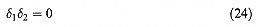
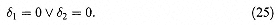
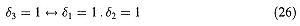
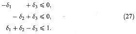
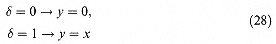
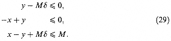

It is sometimes suggested that polynomial expressions in 01 variables are useful for expressing logical conditions. Such polynomial expressions can always be replaced by linear expressions with linear constraints, possibly with a considerable increase in the number of 01 variables. For example the constraint

represents the condition

More generally, if a product term such as d1d2 were to appear anywhere in a model the model could be made linear by the following steps:
(i) Replace d1d2 by a 01 variable d3.
(ii) Impose the logical condition

by means of the extra constraints

An example of the need to linearize products of 01 variables in this way arises in the DECENTRALIZATION problem in Part 3. Products involving more than two variables can be progressively reduced to single variables in a similar manner.
It is even possible to linearize terms involving a product of a 01 variable with a continuous variable. For example the term xd, where x is continuous and d is 01, can be treated in the following way:
(i) Replace xd by a continuous variable y.
(ii) Impose the logical conditions

by the extra constraints

where M is an upper bound for x (and hence also y).
Other non-linear expressions (such as ratios of polynomials) involving 01 variables can also be made linear in similar ways. Such expressions tend to